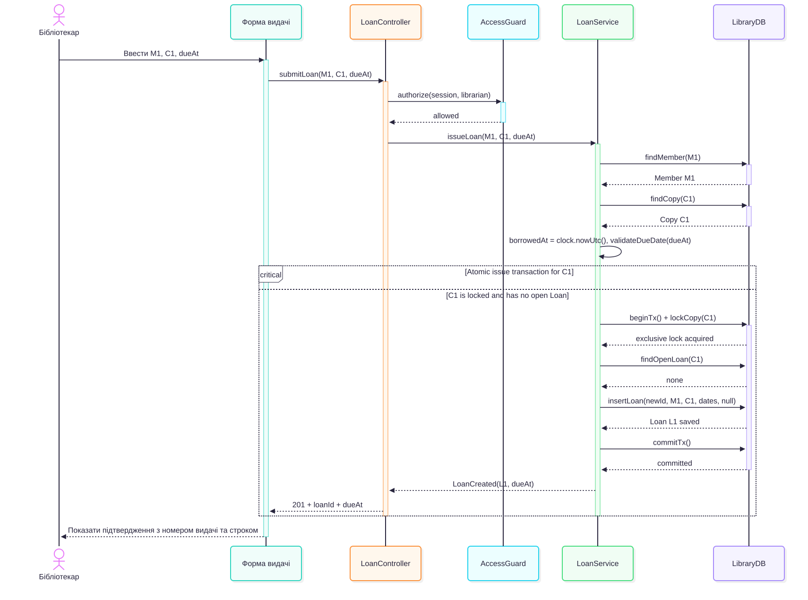
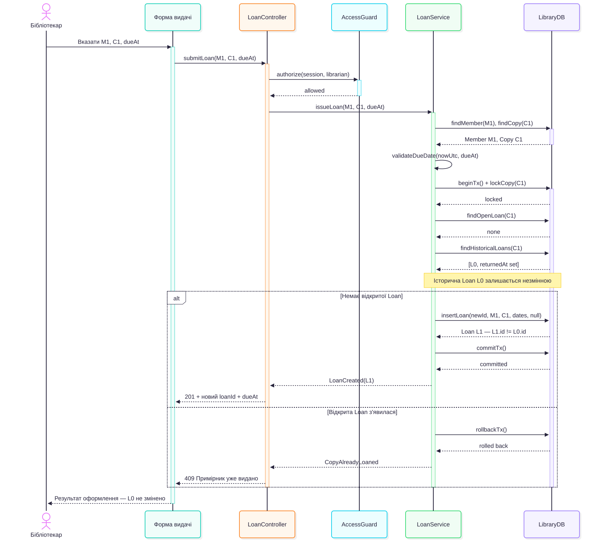
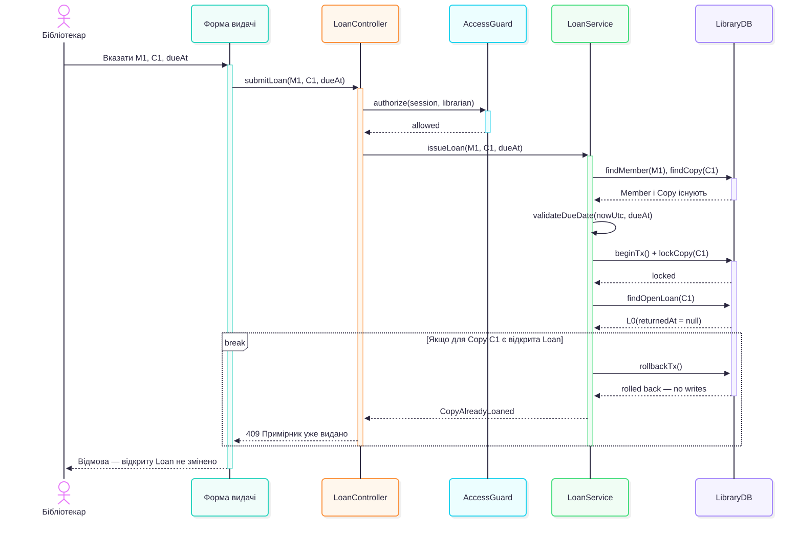
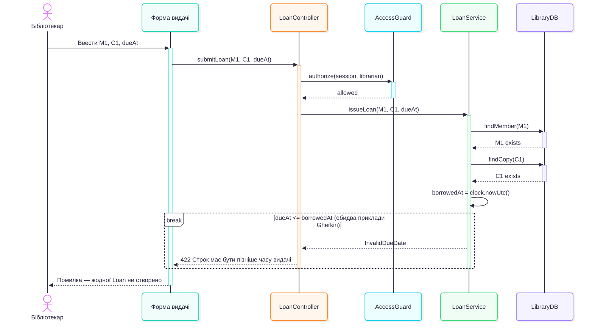
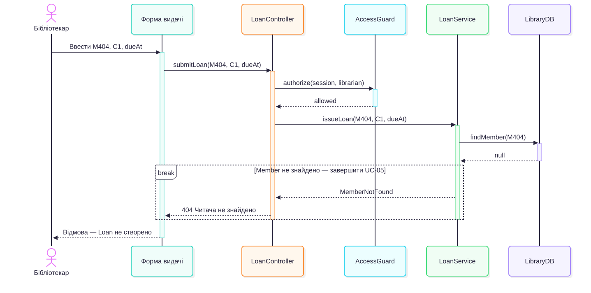
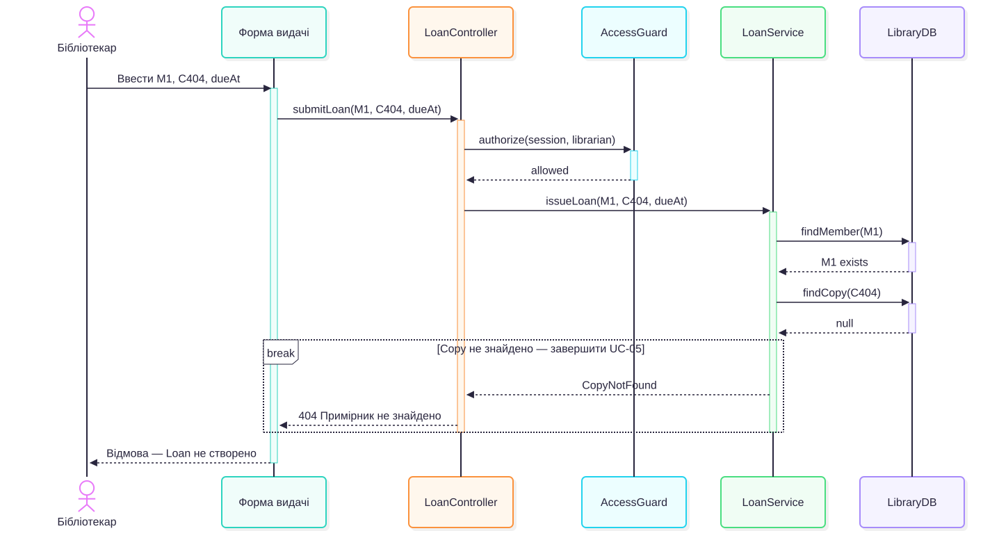
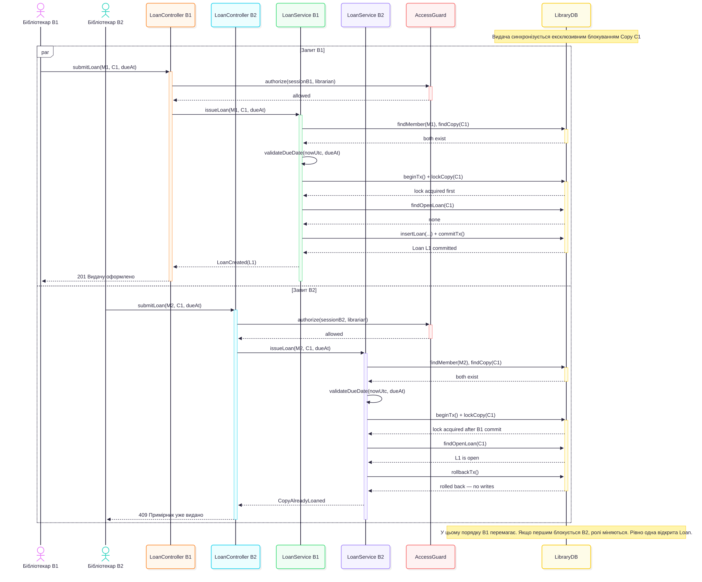
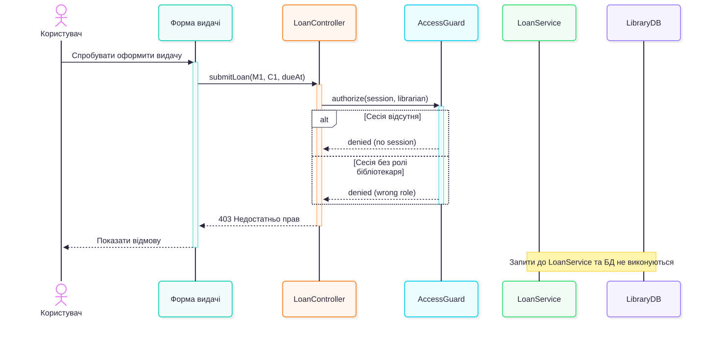

S-01 · Перша успішна видача

Mermaid source
S-02 · Повторна видача

Mermaid source
S-03 · Примірник уже виданий

Mermaid source
S-04 · Недопустимий строк

Mermaid source
S-05 · Читача не знайдено

Mermaid source
S-06 · Примірника не знайдено

Mermaid source
S-07 · Конкурентні запити

Mermaid source
S-08 · Немає прав

Mermaid source